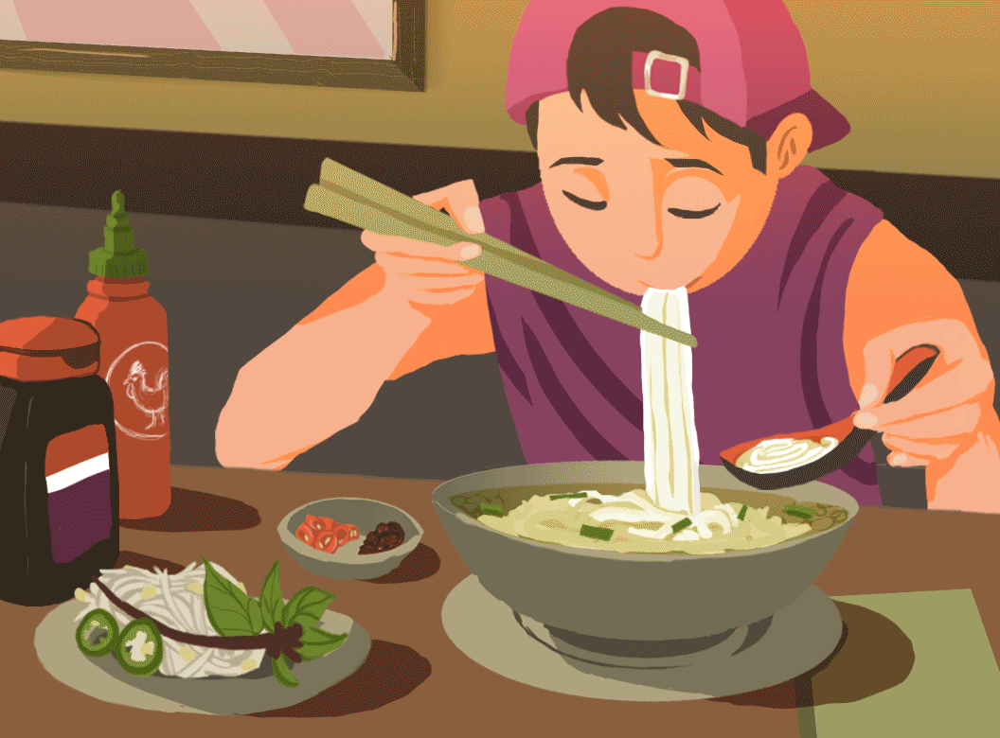

How to Make Pho (Instant Pot)

What Is Pho?
Pho is a Vietnamese soup consisting of bone broth, rice noodles, and thinly sliced meat (usually beef). It may also be served with bean sprouts, fresh herbs, limes, chiles, and other garnishes.
The origins of pho are a bit murky, but it is generally believed to have originated in early 20th century northern Vietnam. It eventually migrated south after the division of the country in 1954, and gained even more popularity following the Vietnam War as refugees introduced it to other cultures.
Ingredients
- 3.2 lbs bones marrow (beef/pork bone is ọkay, but beef bones/ oxtails are more preferred and popular for Pho broth)
- 2 Onions & 1 Ginger
- Pho Spices Package - brand "Old Man Que Huong" as shown in the video (star anise, whole cloves, cinnamon sticks, cardamom, coriander seeds)
- Seasonings: Salt, Black Peppercorn, Sugar, Fish Sauce, Seasoning (or Chicken Bouillon Powder)
- Pho Toppings: Beef Brisket, Beef Tendon, Beef Raw Slices, Beef Balls,... whatever your heart desires
Instructions
- Rinse bones well many times. Fully soak them in cold water & refrigerate overnight to remove blood and impurities from bones (Optional, but highly recommended. You'll be surprised with the result I show in the video. This tip I learned from Japanese ramen broth making)
- Parboil bones with salt. Once it's boiled, cook for 5 mins and take out. Rinse well under water until cleaned.
- Char onions & ginger until fragrant (or air fry 380F-190C for 8 mins for convenience like me)Arrange bones + charred onions + gingers in the pot. Add salt, peppercorn, and water to the max level. Pressure cook 45 mins -> Natural release 45 mins. You will get a beautiful and clear broth.
- Filter to get the broth. Discard onions & ginger (optional), utilize bones again + add beef brisket & beef tendon + add sugar & seasoning to make the meat savory => Pressure cook 15-20 mins -> Natural release 10 mins (Adjust cooking time depending on your meet's size, but don't overcook)
- Roast Pho spice until fragrant => Add to the spice ball/ tea bag/ cheesecloth
- Take out beef brisket and tendon. Add Pho spices to the pot => Saute - Low for 20-30 mins. Season again to your liking with salt, fish sauce, and sugar.
- Assembly: add Pho noodles, add toppings beef brisket/ tendon/ raw slices, and top with the boiling broth. Finish with chopped scallions, and onion slices.
- Enjoy when it's hot with basil, culantro, bean sprouts, siracha, and Hoisin sauce